The Team
Nick Simons - Quality Assurance (Ensuring grammar and style are correct and consistent, upholding deliverables to team standards and grading standards)
Irene Lin - Product Manager (Setting meeting agendas, directing meetings, aligning subtasks with overall goals)
Ari Daly - Project Manager (Monitoring deadlines, scheduling meetings, assigning tasks)
Jamie Dorst - Logistics (Submitting assignments, communicating with professors and teaching assistants)
Beyond these specific roles, each team member contributed equally to conducting each research method and deriving insights from our results.
Executive Summary Statement
Our client, Metro21: Smart Cities Institute, aims to justifying spending on public art in Pittsburgh by measuring public engagement with that art. To address this, our team analyzed existing data, observed and intercepted public art viewers to conduct field interviews, directed think-aloud protocols, created storyboards and ran speed-dating sessions, and conducted experience prototyping studies.
Through this research, we found that:
- People become desensitized to public art that they see frequently
- People only pay attention to public art when doing so is convenient
- Interventions to measure engagement with public art should be non-interfering
Based on this, we propose a mobile application that will recommend users public art pieces that they can view conveniently. More specifically, we recommend that this app delivers these suggestions in the form of push notifications, and forms its suggestions based on (opted in) data pulled from location services, Google calendar, and user-entered interests.
This addresses the needs of Pittsburgh residents to overcome desensitization to art and view art when it is convenient, without being too intrusive. Importantly, this solution will allow Metro21 to measure engagement by tracking the number of users that visit suggested art pieces with location data that is already used by the app.
Problem
Doctor Brett Crawford of Metro21: Smart Cities Institute at Carnegie Mellon approached Carnegie Mellon’s User- Centered Research and Evaluation class to enlist students to help achieve a threefold goal:
- Measuring public engagement with public art in Pittsburgh
- Measuring the impact of art on livability in the city
- Justifying spending on public art
Data Analysis
A previous group of students conducted preliminary research on this problem space, so our first tasks were to analyze this existing data. Each team member used Tableau to build data visualizations based on that existing data, such that we might derive insights about potential solutions. Furthermore, each team member individually created stakeholder diagrams and customer journey maps of various parties in the public art experience. We then compared our individually produced artifacts and insights.
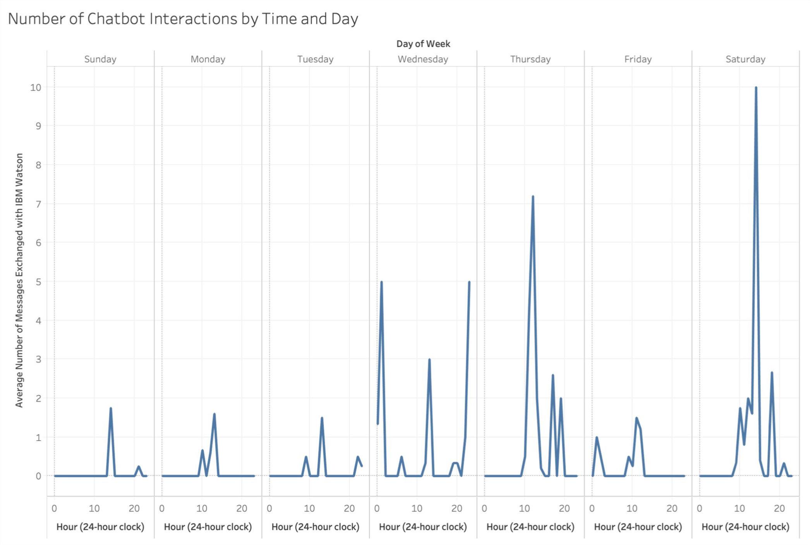 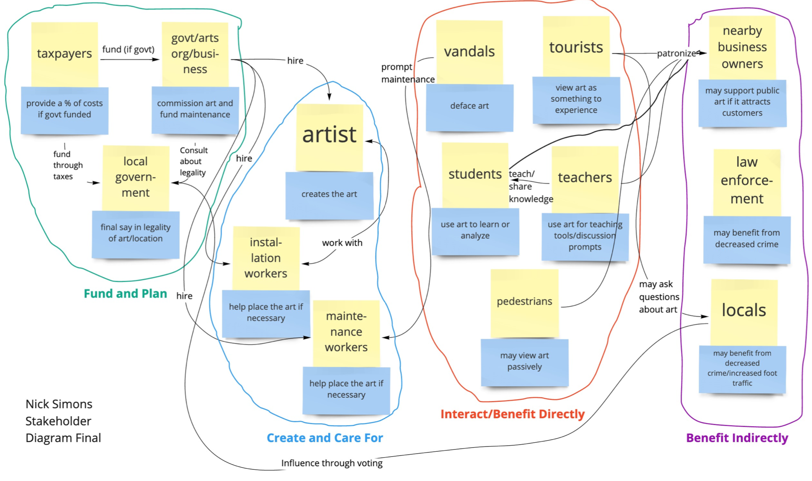 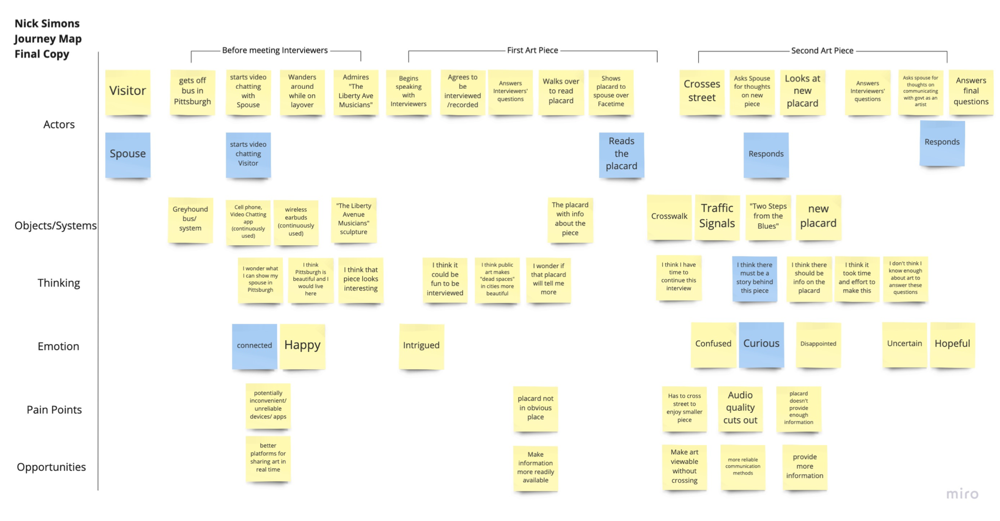Insights
From this method, we concluded that previous research addressed only art viewers who were willing to go out of their way to engage with art. We decided to try to focus on viewers who would be less likely to engage directly.
Observe and Intercept
Next, the team conducted observe and intercept interviews by traveling into the field, first observing the behaviors of people near public art pieces in Pittsburgh, then intercepting them to ask them questions about their experiences. Our target audience was Pittsburgh locals, since we wanted to focus on measuring art’s impact on livability in the city.
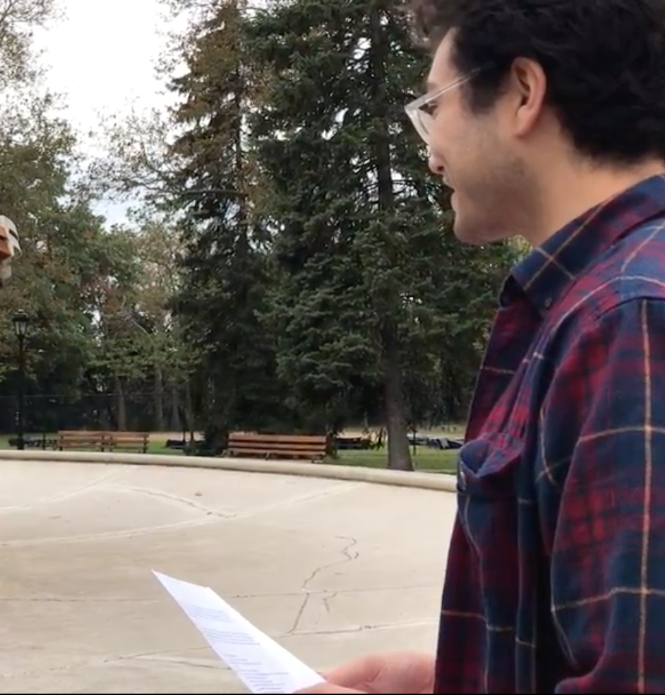Evidence
”I was drawn over here because of the art. It really did play a role in it and I don’t know why.”
Insights
From this method, we learned that Pittsburgh residents appreciate public art, but they are unlikely to pay attention to it, especially if doing so would interrupt their daily routines.
Think-Aloud Protocol
At this point, we knew that our goal was to direct Pittsburgh residents to public art pieces. We recognized that this would bear some similarity to online advertisements. Thus, we conducted think-aloud protocols with users as they viewed mobile websites that featured advertisements of different types.
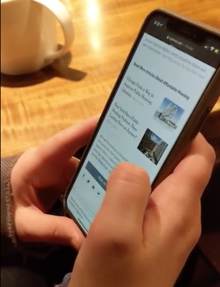Evidence
“[Advertisements] that you can easily scroll past don’t really bug me as much.”
Insights
From this method, we learned that highly intrusive advertisements anger and frustrate users. We extrapolated that our intervention to direct attention to public art must be non-interfering, lest we annoy users.
Speed-Dating
With that insight, we began modeling perceived needs with storyboards. Each user produced three storyboards of varying risk levels for a unique need, then presented all storyboards to participants in speed-dating sessions. We sought to validate the needs portrayed in each storyboard.
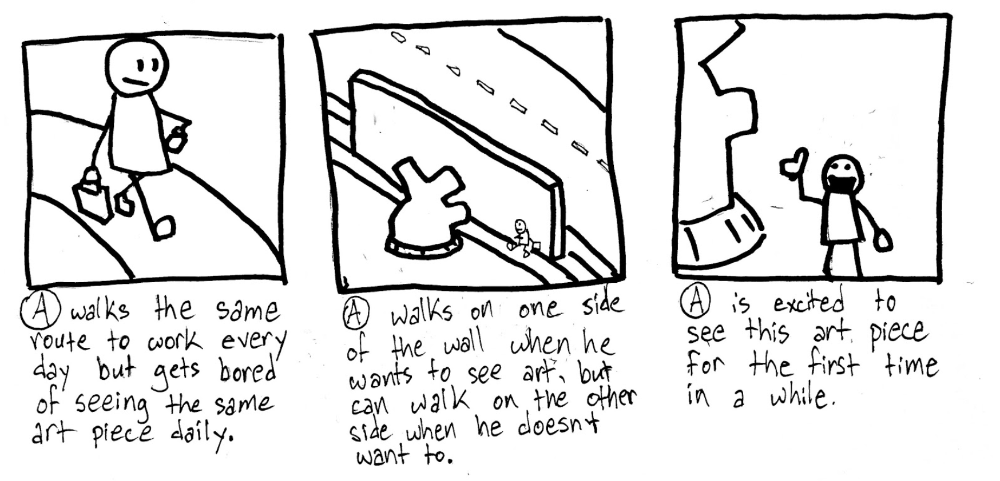Evidence
“[It would be] interesting to have something tell me when to see public art.”
Insights
From this method, we learned that users wish to avoid desensitization to public art, but they would rather be suggested times to look at public art than told when they are allowed to view it.
Experience Prototyping
Using that finding, we generated an idea for an application that would deliver push notifications to users suggesting times to look at public art, based on location data, weather data, and social media sentiment. We created low-fidelity mockups of the notifications and presented them to users through experience prototyping.
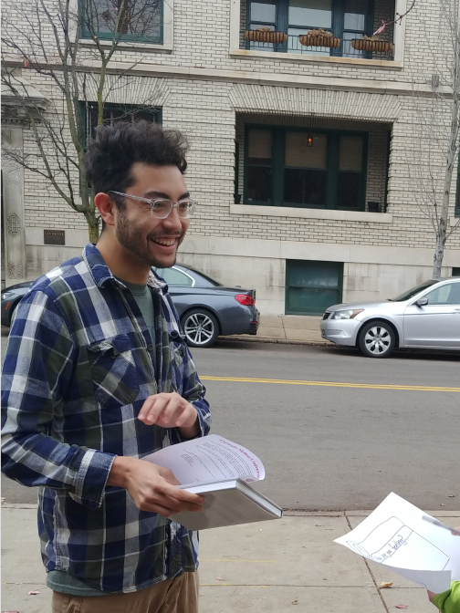Evidence
“I do really appreciate public art...so I may install an app like this and spend some time, on my own time, exploring what’s around.”
Insights
From this method, we learned that users do not use social media frequently enough for social media sentiment to provide useful data for a recommendation system. With this in mind, we iterated upon our idea. Our final prototype may be seen below.
Solution
We propose a mobile application that will recommend users public art pieces that they can view conveniently. This app should deliver push notifications to users, offering recommendations only when viewing public art fits into their schedules, and only recommending art viewable under current weather conditions and relevant to users’ locations and preferred art styles. Recommendations would be based location data, weather data, Google calendar information, and user-provided interests upon onboarding.
We created low-fidelity, paper prototypes of key screens and notifications of our app, as seen below.
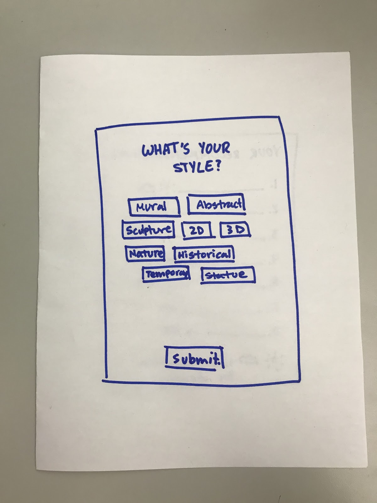 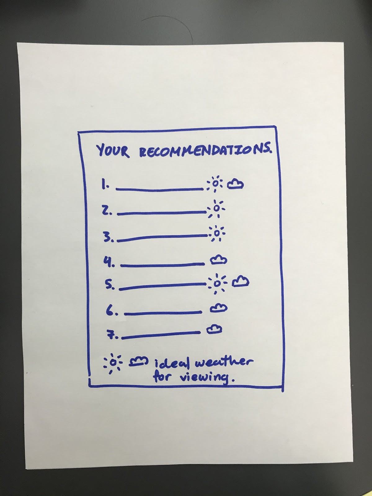 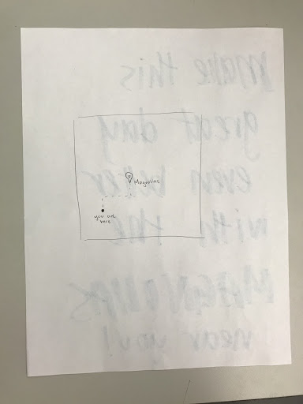 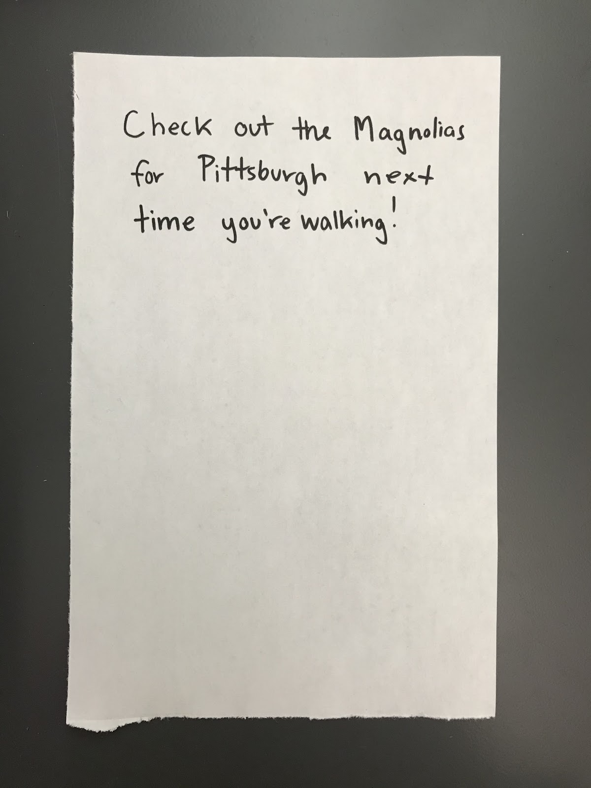